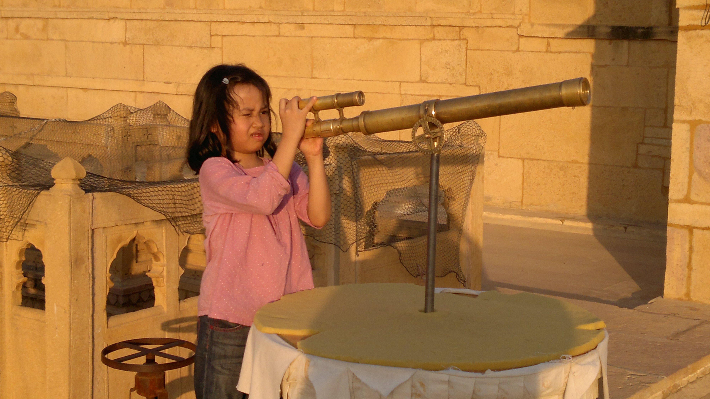

Bithiah Koshy

Systems are fascinating; I enjoy writing about them and exploring their design.
Currently a scribe at Community Labs focusing on Arweave + AO (never underestimate resource coordination).
In gap year to pursue things that matter.
In my free time, I like to read, bushwalk, play tetr, birding, and pursue other things.
Twitter | Ramblings | Writing | Github
❤️ from melb, aus